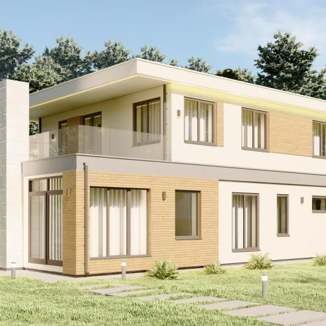
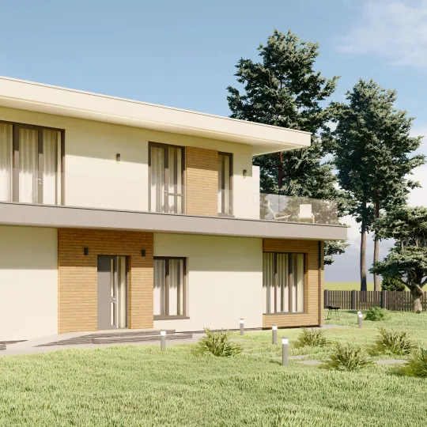
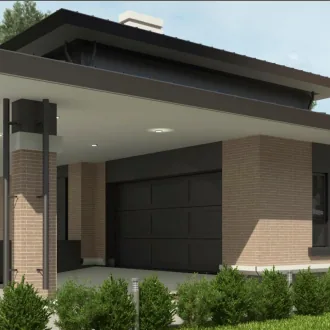

Разговор о семье и участке
Состав семьи, привычки, площадь, бюджет, регион и особенности земли.
Частные резиденции, семейные дома и архитектурные решения для жизни рядом с природой. Индивидуальное проектирование и строительство домов под ключ в Москве и Московской области.
От просторной семейной резиденции с панорамными окнами до небольшого дома в сосновом лесу. Ниже — наши сохранённые визуальные материалы и концепции. Здесь нет многоэтажных жилых комплексов.






Изображения иллюстрируют архитектурные идеи и материалы прежнего каталога. Реализованные объекты и концепции будут подписаны отдельно после подтверждения статуса.
Состав семьи, привычки, площадь, бюджет, регион и особенности земли.
Архитектура, планировка, материалы, остекление, освещение и ландшафт.
Конструктивные и инженерные решения, состав работ, смета и график.
Подбор исполнителей и организация строительных работ по согласованному договору.
Для Подмосковья важны расчёт теплопотерь, снеговые нагрузки, инженерия и качество монтажа. Мы рассматриваем архитектуру вместе с условиями эксплуатации.